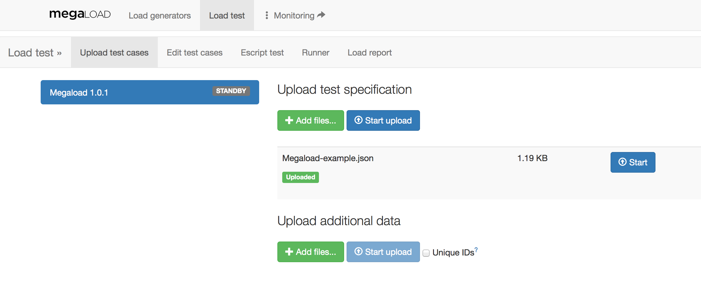
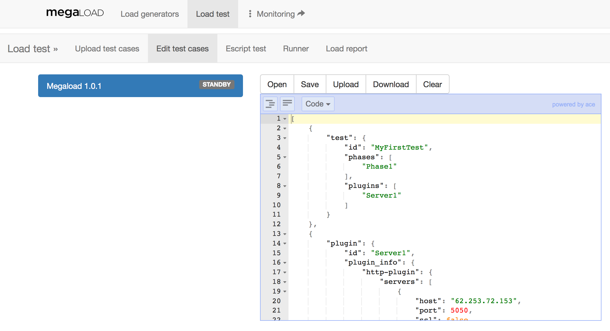
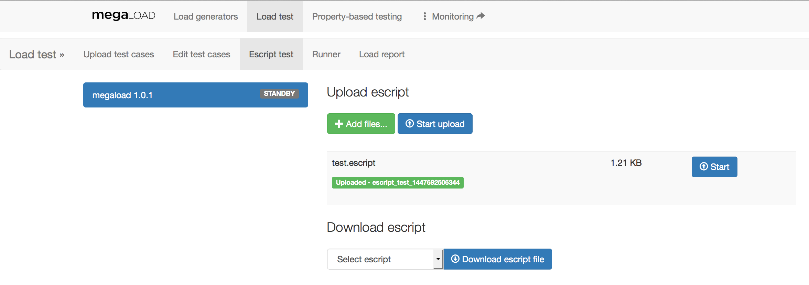
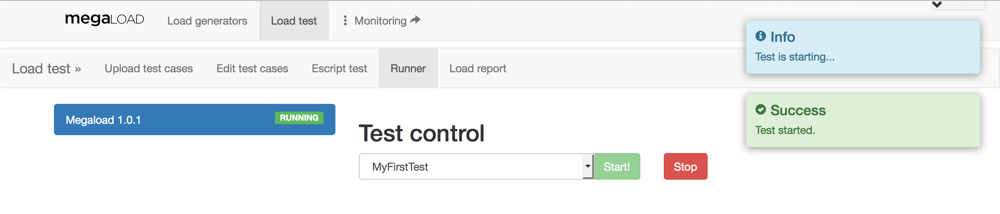
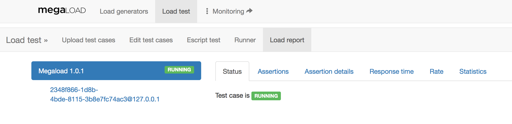
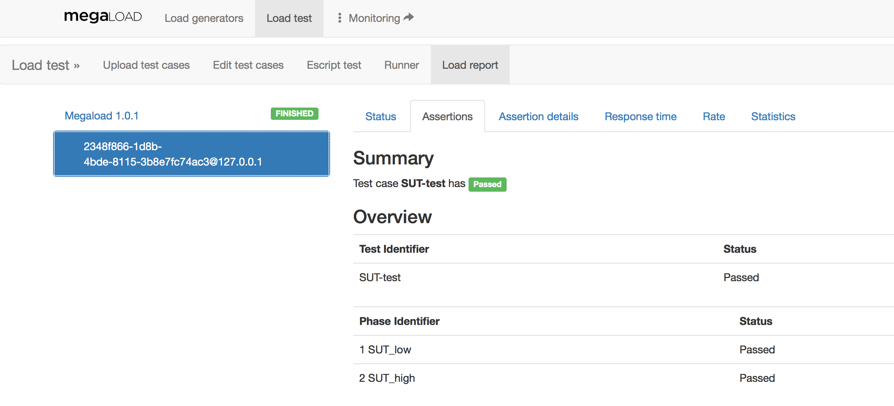
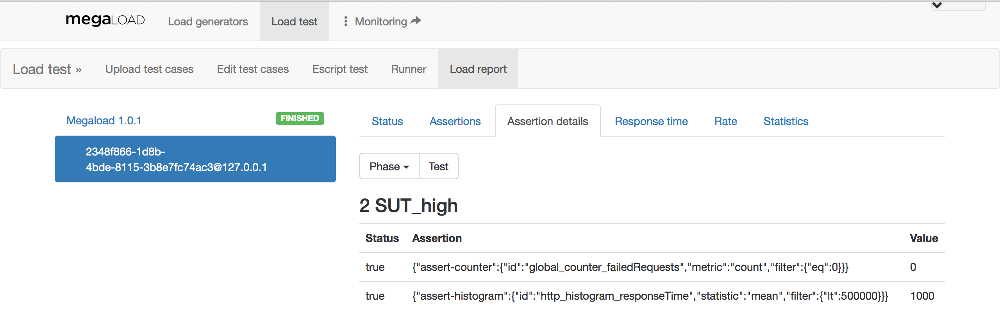
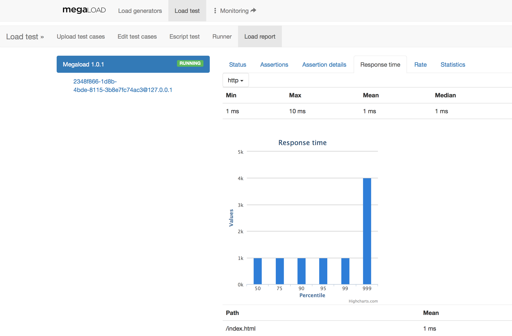
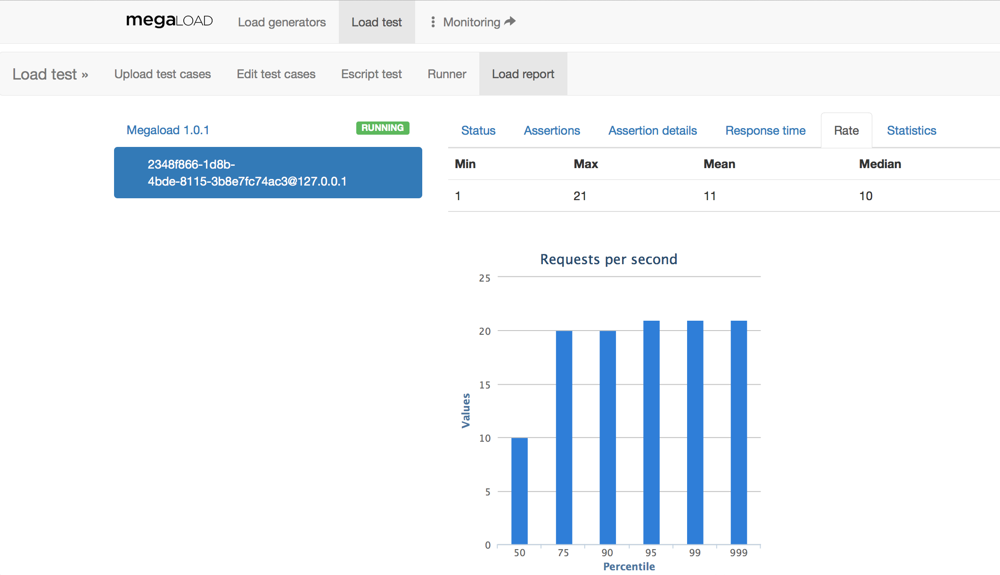

Load testing with Megaload
The Load test page provides all the functionality required to upload, edit and run tests, and to view test results.
Loading a JSON test
Use the Upload test cases tab to upload the test specification and any additional data. Additional data might be a CSV file that contains usernames and passwords to connect to a specific HTTP server.
To upload a test specification:
- Click Upload test cases.
- Click the load generator on the left. This shows the upload controls on the right.
- Click Add files and select the files to upload.
- Click Start upload or Start to upload the individual files.
The status shows as Uploaded or, if the test specification is invalid, Error. If an error occurs, a pop-up window will show the reason.

You can split the test specification into separate files and upload them independently. For example, you can upload the test, phases, and scenarios as separate files. Only the contents are stored in Megaload, not the files themselves. When you download or edit the test specification, you'll note that everything becomes a single JSON list.
After uploading tests, you can view and edit the test specification in the JSON editor.
Aditional data
Any other data required to execute the test, as a CSV file containing some test parameters, can be uploaded with the Upload additional data option. These data files will be sent to all load engines in Megaload's load generator. If the option Unique IDs is selected, the file is split by rows between all the engines in the generator.
A use case for the Unique IDs option is a list of unique user-password pairs that cannot be duplicated between engines. These user-password pairs can be stored in a CSV file, which is then split between engines with this option. For example, in a 4-engine generator with a 1000-lines CSV file, each block of 250 lines will be uploaded to a different engine.
Editing, uploading, and clearing tests
The Edit test cases tab provides a JSON test editor that does basic syntactic checks to help you write test specifications. From here, you can also do the following:
- Upload tests or test objects to test specification for the load generator
- Download the full test specification currently loaded for the load generator
- Clear the test specification for the load generator
To view the editor, first select the Megaload generator on the left. This will show the editor on the right, containing the test specification that is currently loaded.

Note that using the editor is not obligatory. You can write your tests in any text editor of your choice, and then upload the files directly to Megaload. If you need to do further editing, you can open your files in the editor and make changes there.
You can also edit and upload the objects that make up a Megaload test specification.
Opening a test
To open an existing JSON test from disk, click Open in the editor toolbar, and then select the file. Note that the editor will only accept files that contain valid JSON.
Making changes to tests
The JSON editor features syntax highlighting, automatic indentation, and other tools for editing JSON. You can view the text as code or as a tree with expandable and collapsable nodes. Switch between these modes using the dropdown button in the toolbar.
Note: If you leave the page after making changes in the editor, you will lose those changes. You can save the contents of the editor to disk, or upload the contents to add them to the test specification for the load generator. The changes you make in the editor will have no effect until you upload the test.
- You cannot remove objects, but elements and their values can be updated.
- If you change an object's ID, this will result in a new object with that ID being added; the existing object will remain in place. References to the object's ID should be changed, if necessary.
Saving your test
To save the contents of the editor to your local disk, click Save in the editor toolbar. Note that this only saves the contents of the editor; the full test specification that is loaded in the load generator may be different. Saving doesn't change the currently loaded test specification.
If you opened a file from disk, it will be saved with its original filename, otherwise it will be downloaded as document.json.
Uploading tests from the editor
To add the test in the editor to the current test specification for the load generator, click Upload in the editor toolbar. This will add the objects in the editor to the specification, or update objects that are already loaded where applicable.
Note that this action won't replace the currently loaded test specification, but only add or update objects. See the notes under Making changes to tests for more information.
Downloading the test specification
To download the full list of JSON specifications currently uploaded in the system as a single list of JSON objects, click Download in the editor toolbar. The file will be downloaded as megaload-<timestamp>.json.
Clearing tests from Megaload
You can clear the current test specification from the load generator. In the editor toolbar, click Clear, and then click OK.
Loading an Escript test
Use the Escript test tab to upload an Escript test specification. Each uploaded Escript is given an unique identifier in the system that is shown in the user interface after the upload. You can also download all Escript files stored in Megaload from this page.

Running a test
The Runner tab provides the controls to start and stop a test.
To run a test:
- Click the load generator on the left. This shows the Test control menu on the right.
- Select the test identifier from the drop-down list next to the Start button.
- Click Start.
The following screenshot shows a test that has been started:

To stop a test that is running, click the Stop button on the same page.
Viewing test results
The Load report tab provides a summary of the test being executed. The Load report consists of six tabs with additional information:
-
Status shows the current status of the test, which can be one of the following: Running, Finished or Stopped. The status Stopped is shown when the user clicks on Stop in the Runner tab.

-
Assertions shows a summary of the test assertions in the selected load engine. Test assertions are checks on certain metrics (as detailed in following chapters) that are performed at the end of each phase or test.

-
Assertion details allows the user to check which assertions passed or failed in each phase or test by selecting them using the drop-down buttons.

-
Response time shows a statistical report about the response time of the current protocol (selected using the drop-down buttons) in the selected load engine. It provides, among other values, the minimum, maximum, mean, variance, histogram and percentiles. At the bottom of the page, there is a table with the response time per URL requested. The response time per URL is only enabled when the HTTP plugin is configured with
stats_per_urltotrue. (For more information, see the HTTP plugin section.)
-
Rate shows a statistical report about the rate of requests in the selected load engine. It provides, among other values, minimum, maximum, mean, variance, histogram and percentiles of the requests per second rate.

-
Statistics provides a direct link to the full metrics dashboard, also accessible from the Monitoring link at the top of the page.